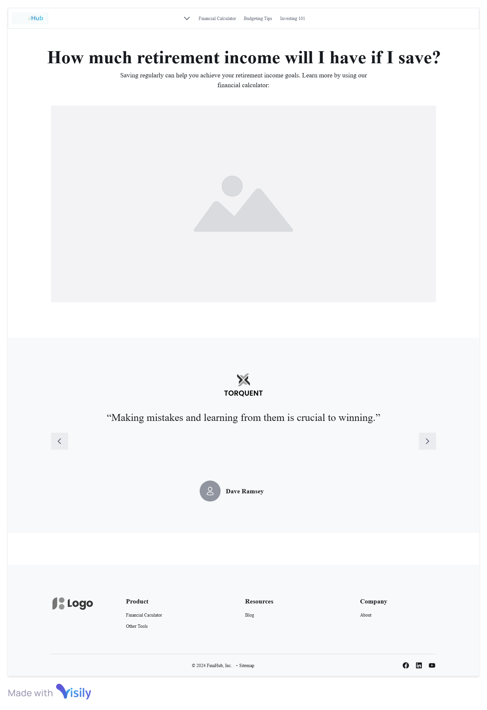
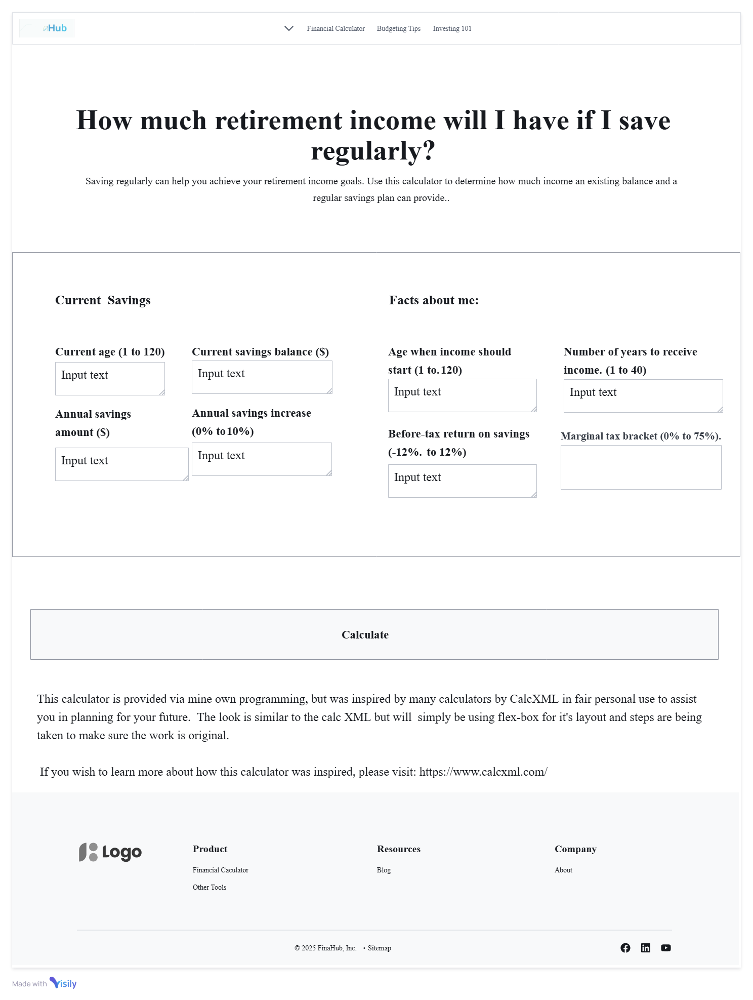
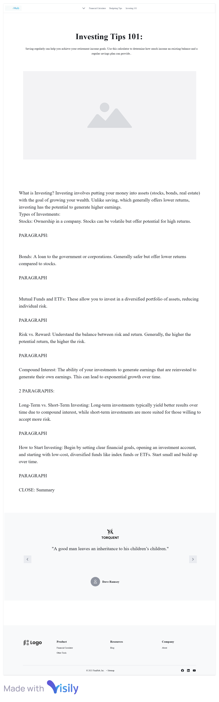

Overview
Purpose
The purpose of this financial website is to provide users with easy-to-understand financial resources and tools for budgeting, saving, and investing. The site will also offer expert advice on managing personal finances, investment strategies, and tips for financial success.
Audience
This website is aimed at individuals who are looking to improve their financial literacy, from beginners to those with some experience in personal finance. The target audience includes young professionals, families, and anyone interested in becoming more financially savvy.
Dynamic elements
JavaScript will be used to enhance the interactivity of the site. Some dynamic elements will include:
- Interactive Budget Calculator: Users can input their income and expenses, and the site will dynamically calculate their budget breakdown.
- Investment Portfolio Tracker: This will allow users to enter their investments and track the performance of stocks or bonds.
- Interactive Charts: Using JavaScript libraries like Chart.js, we will create dynamic charts to show income versus expenses or portfolio performance.
- Responsive Navigation: The navigation bar will adapt to different screen sizes (mobile/desktop), making it interactive and user-friendly.
- Event Listeners: Clicking on financial tips or articles will reveal hidden content or take the user to a detailed page.
NOTE: I plan on doing 2 of these for now and maybe expanding it for a future resume project. Do you have advice on two to choose that will help me learn more? I am leaning towards Interactive Charts and a Budget Calculator that will be like a form. I think that will hit the requirements for the project.
Branding
Website Logo
Style Guide
Color Palette
Palette URL: https://coolors.co/0d141e-06c4ed-42be33-0696d0-ffffff| Primary | Secondary | Accent 1 | Accent 2 |
|---|---|---|---|
| [#06C4ED] | [#0D141E] | [#42BE33] | [#0696D0] |
Typography
Heading Font: IM Fell French Canon SC
Paragraph Font: Lato
I really like these font's. Do I have to choose new ones?
Normal paragraph example
This color scheme will provide a professional and clean look suitable for a financial website, with an emphasis on trust and success.
Colored paragraph example
The font choice will provide a classic, trustworthy feel through the heading font and come with a modern and readable feeling for the paragraph font to help customers feel more at ease with trusting the site.
Navigation
Content
Home page
Header: Introduction to the website and its mission to help users achieve financial success. Main Sections:
- Budgeting Tips: A brief overview of budgeting strategies.
- Investing 101: Quick tips for beginners on how to start investing.
- Financial Calculator: An embedded tool or link to the dynamic budget calculator with interactive charts.
Child Page (Likely Budget Calculator)
Header: "Budget Calculator" Main Content:
- A form where users input income and expenses.
- A JavaScript-powered interactive tool that calculates the budget breakdown and provides recommendations for saving or spending.
Budgeting 101
Header: "Budgeting Tips" Main Content:
- Track Your Expenses: Start by tracking your monthly expenses. You can use apps, spreadsheets, or even pen and paper to record every purchase. Knowing where your money goes helps you make adjustments.
- Create a Realistic Budget: The 50/30/20 rule is a simple budgeting method:
- 50% for necessities (rent, utilities, groceries)
- 30% for wants (entertainment, dining out, travel)
- 20% for savings and debt repayment
- Pay Yourself First: Prioritize savings by setting aside a portion of your income before you spend. This habit helps you build wealth over time.
- Cut Back on Non-Essential Spending: Review subscriptions and discretionary expenses. Cancel memberships or services that you don’t need.
- Build an Emergency Fund: Aim to save 3-6 months of living expenses in case of unexpected financial emergencies.
- Review and Adjust Regularly: Periodically assess your budget to make sure you’re on track and adjust for any changes in income or spending.
Investing 101 Page
Header: "Investing 101" Main Content:
- What is Investing? Investing involves putting your money into assets (stocks, bonds, real estate) with the goal of growing your wealth. Unlike saving, which generally offers lower returns, investing has the potential to generate higher earnings.
- Types of Investments:
- Stocks: Ownership in a company. Stocks can be volatile but offer potential for high returns.
- Bonds: A loan to the government or corporations. Generally safer but offer lower returns compared to stocks.
- Mutual Funds and ETFs: These allow you to invest in a diversified portfolio of assets, reducing individual risk.
- Risk vs. Reward: Understand the balance between risk and return. Generally, the higher the potential return, the higher the risk.
- Compound Interest: The ability of your investments to generate earnings that are reinvested to generate their own earnings. This can lead to exponential growth over time.
- Long-Term vs. Short-Term Investing: Long-term investments typically yield better results over time due to compound interest, while short-term investments are more suited for those willing to accept more risk.
- How to Start Investing: Begin by setting clear financial goals, opening an investment account, and starting with low-cost, diversified funds like index funds or ETFs. Start small and build up over time.
Wireframes
I did a quick mockup. I will probably do another one in color and research a bit more before I start coding. I wanted to get this done quickly so I can finish the class.
Home
I am curious if you know any good tutorials to learn how to do this sliding type object I am going to put financial quotes on and have it slide between them.
Financial Calculator
This idea was inspired by the Church of Jesus Christ's financial calculators available on their website. My design looks relatively similar to theirs right now. I am thinking on how to change the design, but wanted to quickly do a mockup wireframe, and get your feedback on whether this is a good idea or not.
Investing 101
The content still needs to be fully developed. But this is a mockup wireframe I made to show what I'm hoping to do.
Investing 101
The content still needs to be fully made. It will have the same layout as Budgeting Tips